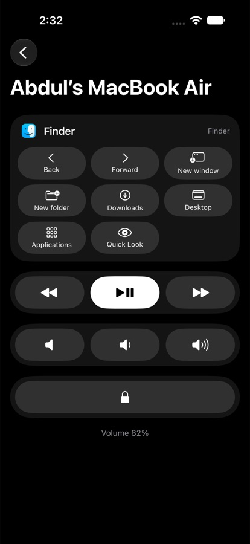
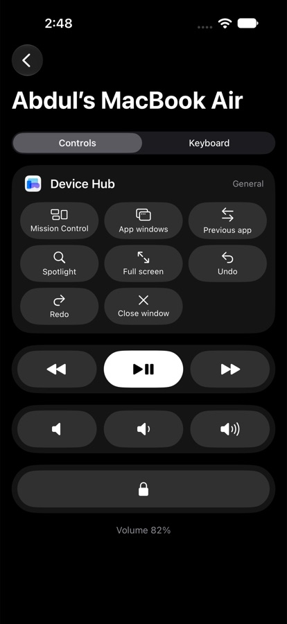
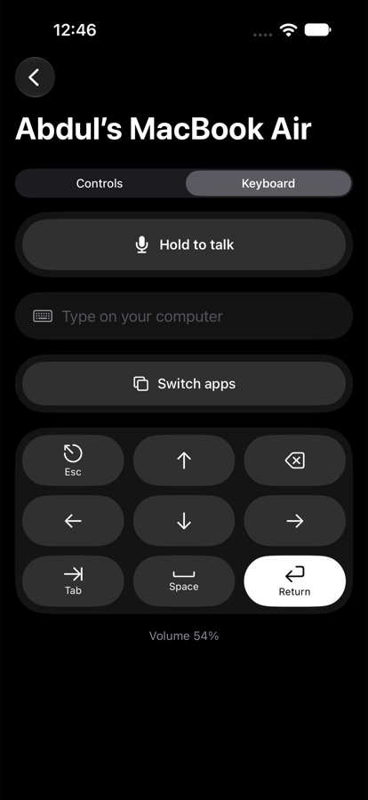
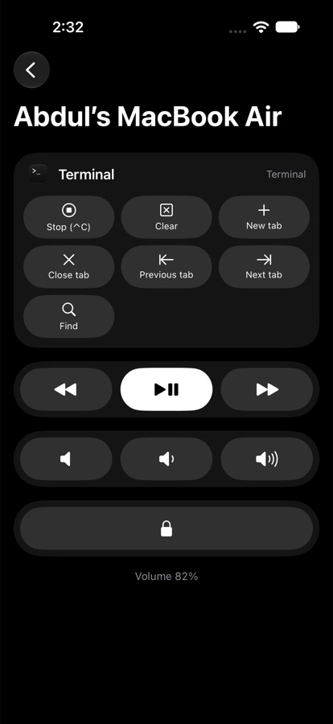

Your Mac,in your pocket.
Wand turns your iPhone into a smart control strip for your Mac. Pause the music, tap shortcuts for whatever app you're using, or just speak and watch your words appear, from across the room or right at your desk.



Everything you reach for, one tap away
Media, volume, shortcuts for the app in front, a full keyboard and an app switcher. Wand keeps your Mac within reach when you're not at your desk.
Controls that follow your app
Switch to Chrome and you get back, refresh and tabs. Jump into Figma and it's zoom and tools. Open Keynote and your phone becomes a slide clicker. Wand watches which app is in front and updates your phone the instant you switch.

Type, switch and lock without getting up
Type into any app on your Mac as you type on your phone. Use the arrow keys, Return and Esc, flick through open apps with the app switcher, or lock your Mac as you walk away.
Speak, don't type.
Hold a key, say what you mean, let go. Wand types it into whatever app you're using: messages, emails, docs, prompts, code comments.
Hold ⌥ and talk
Hold the right Option key anywhere on your Mac, speak, and let go. A small pill shows Wand listening, then your words land right where your cursor is.
- Works in any app with a text field
- Types for you, so your clipboard stays untouched
- Works on its own, no iPhone needed
Or talk into your phone
On the couch, at the whiteboard, or across the room: hold Hold to talk on your iPhone and speak. Your phone listens, and your Mac types.
- Uses your iPhone's microphone, close to your voice
- Same settings as your Mac, set up once
- Live level meter and haptics while you talk
Your engine, your choice
Pick the transcription that fits you. Use a top cloud model with your own API key, or keep everything on your Mac with private, offline recognition.
- OpenAI, Groq, or any OpenAI-compatible server
- Bring your own key or your own infrastructure
- Switch anytime in the Wand window
Cloud
Most accurate. Your audio goes only to the provider you choose.
On this Mac
Private and free. Your audio never leaves your Mac.
No Wand servers
There's no Wand account and no Wand cloud. Your audio goes to your Mac, then to the engine you picked.
Keys in your Keychain
Your API key is stored in the macOS Keychain, never in a file and never shared.
Audio isn't kept
Each recording is deleted right after it's transcribed. Wand doesn't keep a history of what you said.
Coming next: AI clean-up that removes "um"s and fixes punctuation Soon Voice commands like "next slide" Soon
Small remote. Big shortcuts.
Media keys
Play, pause, skip and go back in Music, Spotify, YouTube or anything else that's playing.
Volume & mute
Turn it up, turn it down or mute, with the live volume level shown on your phone.
App-aware shortcuts
A shortcut set for the app you're using, with each app's real keyboard shortcuts.
Remote keyboard
Type in any language, emoji included. Edits on your phone are mirrored on your Mac as you go.
App switcher
Open the app switcher, pick an app with ← → and hit Return.
Voice dictation
Hold Right ⌥ on your Mac or Hold to talk on your phone, and your words are typed into the app in front.
Pair in seconds
Scan the QR code on your Mac with your iPhone camera. That's the whole setup.
Works everywhere you work
Dictation types into any app with a text field. Shortcut sets cover the apps people use all day, and a general set covers everything else.
Made for life away from the keyboard
Presenters
Move through Keynote or PowerPoint slides from anywhere in the room, and black the screen when you need the room's attention.
Designers
Zoom to fit, switch tools and hide the UI in Figma while you step back to look at the work.
Developers
Run, stop and build in Xcode, stop a runaway command, or clear the terminal while you think.
Music & movies
Pause, skip and change the volume from the couch without getting up.
Meetings
Mute, turn your video off, share your screen or raise your hand in Zoom and Teams.
Everyday
Lock your Mac as you walk away, switch apps, or type a quick search from across the room.
Set up in a minute
1. Open Wand on your Mac
It lives in your menu bar. A short setup walks you through the one permission it needs.
2. Scan the code
Point your iPhone camera at the QR code on your Mac. Wand opens and pairs by itself.
3. Take control
Your Mac shows up whenever you're on the same Wi-Fi. No account, no cloud, no setup again.
Get Wand for your Mac
Free and open source. Download the Mac app, then pair your iPhone with a QR code.
- iPhone app + Mac app
- Private: stays on your Wi-Fi
- No account or sign-up
- Open source on GitHub
Questions
What do I need?
An iPhone and a Mac on the same Wi-Fi network. Install Wand on both, open the Mac app, and scan the code. A Windows version is planned.
Does my data go to the cloud?
Your iPhone talks straight to your Mac over your local network, with no account and no Wand server in the middle. The only exception is dictation with a cloud engine: your recording is sent to the provider you chose (OpenAI, Groq or your own server) to be transcribed. Choose On this Mac to keep audio entirely on your Mac.
Why does the Mac app ask for Accessibility permission?
To press keys on your behalf: play and pause, shortcuts, typing and the app switcher. macOS requires your permission for that, and Wand only presses keys when you tap something on your phone.
Can someone else on my Wi-Fi control my Mac?
Only phones you've paired. Pairing needs the one-time code shown on your Mac, and you can forget any phone from the Wand window at any time.
How does dictation work?
Hold the right Option key on your Mac (or Hold to talk on your iPhone), speak, and let go. Wand turns your speech into text with the engine you chose and types it where your cursor is. It works in any app, even without pairing a phone.
Which transcription engine should I use?
Cloud is the most accurate: bring an API key from OpenAI or Groq, or point Wand at any OpenAI-compatible server you run. On this Mac is private and free, using the Mac's built-in on-device recognition, and it's less accurate with names and jargon. You can switch anytime.
Which apps have shortcuts?
Browsers, Figma, VS Code, Cursor, Zed, Xcode, Terminal and other terminals, Slack, Zoom, Teams, Finder, Mail, Notion, Notes, Keynote, PowerPoint and Spotify, with more on the way. Every other app gets a general set: Mission Control, app switching, Spotlight, full screen, undo and redo.
What's next?
AI clean-up for dictation, voice commands, screenshots to your clipboard in one tap, a trackpad mode, now-playing info with artwork, and Windows support.